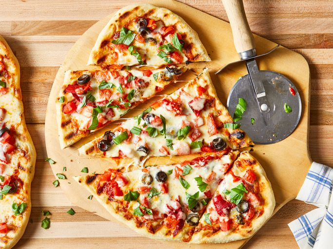

Pizza on the Grill

Description
Pizza on the grill is a fantastic way to make pizza at home!
The heat of a hot grill is a perfect match for a professional pizza oven.
This grilled pizza recipe makes the dough from scratch and flavors it with garlic and basil.
Use your favorite variety of toppings and shredded cheese, but it's best not to overload the pizza.
Ingredients
- Cup warm water
- Active dry yeast
- White sugar
- All-purpose flour
- Olive oil
- Kosher salt
- Garlic
- Fresh basil
- Tomato sauce
- Black olives
- Red peppers
- Mozzarella cheese
Steps
- Gather all ingredients
- Make dough
- Place dough in a well-oiled bowl
- Set aside to rise until doubled, about 1 hour
- Meanwhile, make garlic oil
- Preheat an outdoor grill for high heat
- Punch down dough and divide in half
- Place one piece of dough on the hot grill
- Working quickly, brush garlic oil over crust
- Top with 1/2 of each of the following: tomato sauce, chopped tomatoes, olives, red peppers, cheese, and basil
- Close the lid and cook until cheese melts
- Serve hot and enjoy!
Home